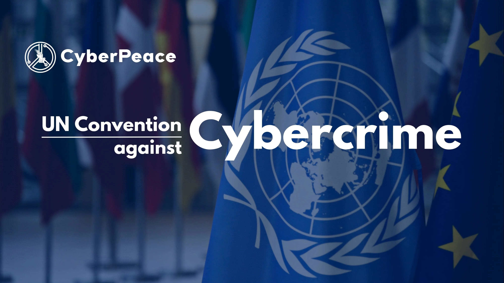

Global Response
Cybersecurity isn't just a local issue. It is a global challenge that is often crossing borders. Countries, companies, and international organisations are able to unite and work together to share intelligence, create laws, and coordinate cyber defenses. A strong global response means a safer digital space for individuals, businesses, and governments worldwide.
Further Explanation and Examples
International cooperation is essential in order for a strong global response as cyberattacks often originate in a single country but quickly spread to neighbouring ones. For example the Budapest Convention on Cybercrime, the first international treaty introduced to solely focus on tackling internet crime. Organisations like INTERPOL, the UN, and other alliances also share experience and track cybercriminal networks. Additional large tech companies like Google and Microsoft have their own threat detection and assist in the protection of everyday individuals.
Key Points
- Information Sharing: Governments and external agencies exchange data on upcoming cyber threats.
- International Laws: Treaties and agreements are put in place to set common standards in fighting cybercrime.
- Rapid Response Teams: Cross-border associations react quickly to major attacks.
- Capacity Building: Training and funding for countries with weaker cyber defences are put in place.
- Public-Private Partnerships: Technology companies partner with governments to strengthen overall resilience.